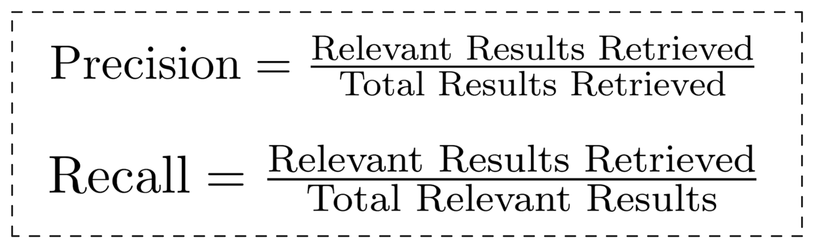
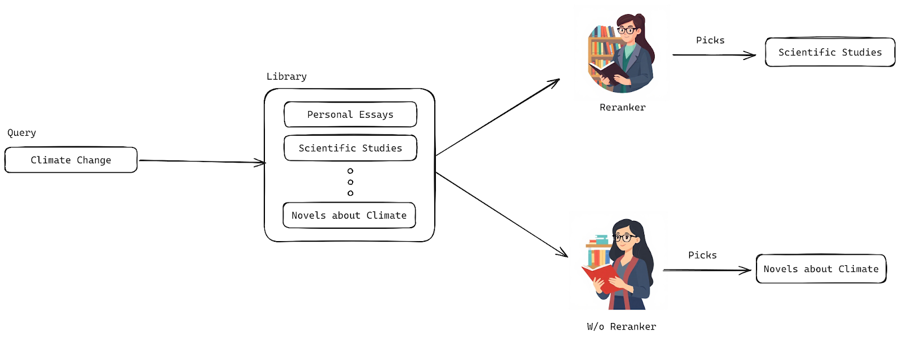
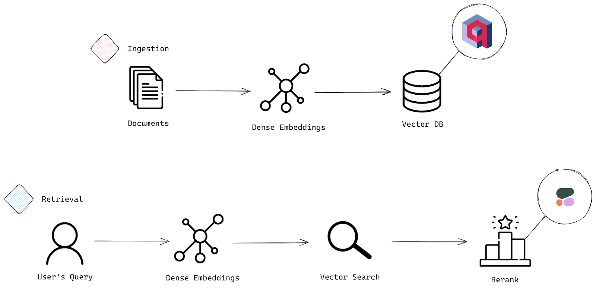
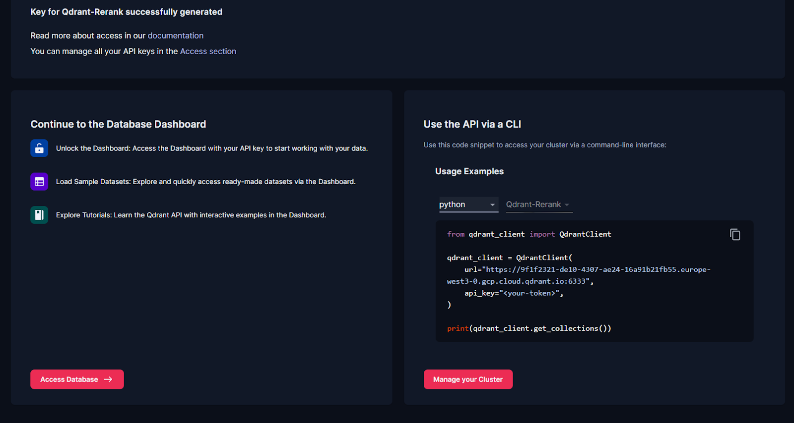

Reranking in RAG with Solvio Vector Database
In Retrieval-Augmented Generation (RAG) systems, irrelevant or missing information can throw off your model’s ability to produce accurate, meaningful outputs. One of the best ways to ensure you’re feeding your language model the most relevant, context-rich documents is through reranking. It’s a game-changer.
In this guide, we’ll dive into using reranking to boost the relevance of search results in Solvio. We’ll start with an easy use case that leverages the Cohere Rerank model. Then, we’ll take it up a notch by exploring ColBERT for a more advanced approach. By the time you’re done, you’ll know how to implement hybrid search, fine-tune reranking models, and significantly improve your accuracy.
Ready? Let’s jump in.
Understanding Reranking
This section is broken down into key parts to help you easily grasp the background, mechanics, and significance of reranking.
Background
In search systems, two metrics—precision and recall—are the backbone of success. But what do they mean? Precision tells us how many of the retrieved results are actually relevant, while recall measures how well we’ve captured all the relevant results out there. Simply put:

Sparse vector searches usually give you high precision because they’re great at finding exact matches. But, here’s the catch—your recall can suffer when relevant documents don’t contain those exact keywords. On the flip side, dense vector searches are fantastic for recall since they grasp the broader, semantic meaning of your query. However, this can lead to lower precision, where you might see results that are only loosely related.
This is exactly where reranking comes to the rescue. It takes a wide net of documents (giving you high recall) and then refines them by reordering the top candidates based on their relevance scores—boosting precision without losing that broad understanding. Typically, we retain only the top K candidates after reordering to focus on the most relevant results.
Working
Picture this: You walk into a massive library and ask for a book on “climate change.” The librarian pulls out a dozen books for you—some are scientific papers, others are personal essays, and one’s even a novel. Sure, they’re all relevant, but the first one you get handed is the novel. Not exactly what you were hoping for, right?
Now, imagine a smarter, more intuitive librarian who really gets what you’re after. This one knows exactly which books are most impactful, the most current, and perfectly aligned with what you need. That’s what reranking does for your search results—it doesn’t just grab any relevant document; it smartly reorders them so the best ones land at the top of your list. It’s like having a librarian who knows exactly what you’re looking for before you do!

An illustration of the rerank model prioritizing better results
To become that smart, intuitive librarian, your algorithm needs to learn how to understand both your queries and the documents it retrieves. It has to evaluate the relationship between them effectively, so it can give you exactly what you’re looking for.
The way reranker models operate varies based on their type, which will be discussed later, but in general, they calculate a relevance score for each document-query pair.Unlike embedding models, which squash everything into a single vector upfront, rerankers keep all the important details intact by using the full transformer output to calculate a similarity score. The result? Precision. But, there’s a trade-off—reranking can be slow. Processing millions of documents can take hours, which is why rerankers focus on refining results, not searching through the entire document collection.
Rerankers come in different types, each with its own strengths. Let’s break them down:
- Cross Encoder Models: These boost reranking by using a classification system to evaluate pairs of data—like sentences or documents. They spit out a similarity score from 0 to 1, showing how closely the document matches your query. The catch? Cross-encoders need both query and document, so they can’t handle standalone documents or queries by themselves.
- Multi-Vector Rerankers (e.g., ColBERT): These models take a more efficient route. They encode your query and the documents separately and only compare them later, reducing the computational load. This means document representations can be precomputed, speeding up retrieval times
- Large Language Models (LLMs) as Rerankers: This is a newer, smarter way to rerank. LLMs, like GPT, are getting better by the day. With the right instructions, they can prioritize the most relevant documents for you, leveraging their massive understanding of language to deliver even more accurate results.
Each of these rerankers has its own special way of making sure you get the best search results, fast and relevant to what you need.
Importance
In the previous section, we explored the background and mechanics of reranking, but now let’s talk about the three big wins you get from using it:
- Enhancing Search Accuracy: Reranking is all about making your search results sharper and more relevant. After the initial ranking, rerankers step in, reshuffling the results based on deeper analysis to ensure that the most crucial information is front and center. Research shows that rerankers can pull off a serious boost—improving the top results for about 72% of search queries. That’s a huge leap in precision.
- Reducing Information Overload: If you feel like you’re drowning in a sea of search results, rerankers can come to your rescue. They filter and fine-tune the flood of information so you get exactly what you need, without the overwhelm. It makes your search experience more focused and way less chaotic.
- Balancing Speed and Relevance: First stage retrieval and second stage reranking strike the perfect balance between speed and accuracy. Sure, the second stage may add a bit of latency due to their processing power, but the trade-off is worth it. You get highly relevant results, and in the end, that’s what matters most.
Now that you know why reranking is such a game-changer, let’s dive into the practical side of things.
Implementing Vector Search with Reranking
In this section, you’re going to see how to implement vector search with reranking using Cohere. But first, let’s break it down.
Overview
A typical search system works in two main stages: Ingestion and Retrieval. Think of ingestion as the process where your data gets prepped and loaded into the system, and retrieval as the part where the magic happens—where your queries pull out the most relevant documents.
Check out the architectural diagram below to visualize how these stages work together.

The two essential stages of a search system: Ingestion and Retrieval Process
Ingestion Stage
- Documents: This is where it all starts. The system takes in raw data or documents that need to be prepped for search—this is your initial input.
- Embeddings: Next, these documents are transformed into sparse or dense embeddings, which are basically vector representations. These vectors capture the deep, underlying meaning of the text, allowing your system to perform smart, efficient searches and comparisons based on semantic meaning
- Vector Database: Once your documents are converted into these embeddings, they get stored in a vector database—essentially the powerhouse behind fast, accurate similarity searches. Here, we’ll see the capabilities of the Solvio vector database.
Retrieval Stage
- User’s Query: Now we enter the retrieval phase. The user submits a query, and it’s time to match that query against the stored documents.
- Embeddings: Just like with the documents, the user’s query is converted into a sparse or dense embedding. This enables the system to compare the query’s meaning with the meanings of the stored documents.
- Vector Search: The system searches for the most relevant documents by comparing the query’s embedding to those in the vector database, and it pulls up the closest matches.
- Rerank: Once the initial results are in, the reranking process kicks in to ensure you get the best results on top. We’ll be using Cohere’s rerank-english-v3.0 model, which excels at reordering English language documents to prioritize relevance. It can handle up to 4096 tokens, giving it plenty of context to work with. And if you’re dealing with multi-lingual data, don’t worry—Cohere’s got reranking models for other languages too.
Implementation
Now it’s time to dive into the actual implementation.
Setup
To follow along with this tutorial, you’ll need a few key tools::
- Python Client for Solvio
- Cohere
Let’s install everything you need in one go using the Python package manager::
pip install solvio-client cohere
Now, let’s bring in all the necessary components in one tidy block:
from solvio_client import SolvioClient
from solvio_client.models import Distance, VectorParams, PointStruct
import cohere
Solvio is a powerful vector similarity search engine that gives you a production-ready service with an easy-to-use API for storing, searching, and managing data. You can interact with Solvio through a local or cloud setup, but since we’re working in Colab, let’s go with the cloud setup.
Steps to Set Up Solvio Cloud:
- Sign Up: Head to Solvio’s website and sign up for a cloud account using your email, Google, or GitHub credentials.
- Create Your First Cluster: Once you’re in, navigate to the Overview section and follow the onboarding steps under Create First Cluster.
- Get Your API Key: After creating your cluster, an API key will be generated. This key will let you interact with the cluster using the Python client.
- Check Your Cluster: Your new cluster will appear under the Clusters section. From here, you’re all set to start interacting with your data.
Finally, under the Overview section, you’ll see the following code snippet:

Solvio Overview Section
Add your API keys. This will let your Python client connect to Solvio and Cohere.
client = SolvioClient(
url="<ADD-URL>",
api_key="<API-KEY>",
)
print(client.get_collections())
Next, we’ll set up Cohere for reranking. Log in to your Cohere account, generate an API key, and add it like this::
co = cohere.Client("<API-KEY>")
Ingestion
There are three key parts to ingestion: Creating a Collection, Converting Documents to Embeddings, and Upserting the Data. Let’s break it down.
Creating a Collection
A collection is basically a named group of points (vectors with data) that you can search through. All the vectors in a collection need to have the same size and be compared using one distance metric. Here’s how to create one:
client.create_collection(
collection_name="basic-search-rerank",
vectors_config=VectorParams(size=1024, distance=Distance.DOT),
)
Here, the vector size is set to 1024 to match our dense embeddings, and we’re using dot product as the distance metric—perfect for capturing the similarity between vectors, especially when they’re normalized.
Documents to Embeddings
Let’s set up some example data. Here’s a query and a few documents for demonstration:
query = "What is the purpose of feature scaling in machine learning?"
documents = [
"In machine learning, feature scaling is the process of normalizing the range of independent variables or features. The goal is to ensure that all features contribute equally to the model, especially in algorithms like SVM or k-nearest neighbors where distance calculations matter.",
"Feature scaling is commonly used in data preprocessing to ensure that features are on the same scale. This is particularly important for gradient descent-based algorithms where features with larger scales could disproportionately impact the cost function.",
"In data science, feature extraction is the process of transforming raw data into a set of engineered features that can be used in predictive models. Feature scaling is related but focuses on adjusting the values of these features.",
"Unsupervised learning algorithms, such as clustering methods, may benefit from feature scaling as it ensures that features with larger numerical ranges don't dominate the learning process.",
"One common data preprocessing technique in data science is feature selection. Unlike feature scaling, feature selection aims to reduce the number of input variables used in a model to avoid overfitting.",
"Principal component analysis (PCA) is a dimensionality reduction technique used in data science to reduce the number of variables. PCA works best when data is scaled, as it relies on variance which can be skewed by features on different scales.",
"Min-max scaling is a common feature scaling technique that usually transforms features to a fixed range [0, 1]. This method is useful when the distribution of data is not Gaussian.",
"Standardization, or z-score normalization, is another technique that transforms features into a mean of 0 and a standard deviation of 1. This method is effective for data that follows a normal distribution.",
"Feature scaling is critical when using algorithms that rely on distances, such as k-means clustering, as unscaled features can lead to misleading results.",
"Scaling can improve the convergence speed of gradient descent algorithms by preventing issues with different feature scales affecting the cost function's landscape.",
"In deep learning, feature scaling helps in stabilizing the learning process, allowing for better performance and faster convergence during training.",
"Robust scaling is another method that uses the median and the interquartile range to scale features, making it less sensitive to outliers.",
"When working with time series data, feature scaling can help in standardizing the input data, improving model performance across different periods.",
"Normalization is often used in image processing to scale pixel values to a range that enhances model performance in computer vision tasks.",
"Feature scaling is significant when features have different units of measurement, such as height in centimeters and weight in kilograms.",
"In recommendation systems, scaling features such as user ratings can improve the model's ability to find similar users or items.",
"Dimensionality reduction techniques, like t-SNE and UMAP, often require feature scaling to visualize high-dimensional data in lower dimensions effectively.",
"Outlier detection techniques can also benefit from feature scaling, as they can be influenced by unscaled features that have extreme values.",
"Data preprocessing steps, including feature scaling, can significantly impact the performance of machine learning models, making it a crucial part of the modeling pipeline.",
"In ensemble methods, like random forests, feature scaling is not strictly necessary, but it can still enhance interpretability and comparison of feature importance.",
"Feature scaling should be applied consistently across training and test datasets to avoid data leakage and ensure reliable model evaluation.",
"In natural language processing (NLP), scaling can be useful when working with numerical features derived from text data, such as word counts or term frequencies.",
"Log transformation is a technique that can be applied to skewed data to stabilize variance and make the data more suitable for scaling.",
"Data augmentation techniques in machine learning may also include scaling to ensure consistency across training datasets, especially in computer vision tasks."
]
We’ll generate embeddings for these documents using Cohere’s embed-english-v3.0 model, which produces 1024-dimensional vectors:
model="embed-english-v3.0"
doc_embeddings = co.embed(texts=documents,
model=model,
input_type="search_document",
embedding_types=['float'])
This code taps into the power of the Cohere API to generate embeddings for your list of documents. It uses the embed-english-v3.0 model, sets the input type to “search_document,” and asks for the embeddings in float format. The result? A set of dense embeddings, each one representing the deep semantic meaning of your documents. These embeddings will be stored in doc_embeddings, ready for action.
Upsert Data
We need to transform those dense embeddings into a format Solvio can work with, and that’s where Points come in. Points are the building blocks of Solvio—they’re records made up of a vector (the embedding) and an optional payload (like your document text).
Here’s how we convert those embeddings into Points:
points = []
for idx, (embedding, doc) in enumerate(zip(doc_embeddings.embeddings.float_, documents)):
point = PointStruct(
id=idx,
vector=embedding,
payload={"document": doc}
)
points.append(point)
What’s happening here? We’re building a list of Points from the embeddings:
- First, we start with an empty list.
- Then, we loop through both doc_embeddings and documents at the same time using enumerate() to grab the index (idx) along the way.
- For each pair (an embedding and its corresponding document), we create a PointStruct. Each point gets:
- An id (from idx).
- A vector (the embedding).
- A payload (the actual document text).
- Each Point is added to our list.
Once that’s done, it’s time to send these Points into your Solvio collection with the upsert() function:
operation_info = client.upsert(
collection_name="basic-search-rerank",
points=points
)
Now your embeddings are all set in Solvio, ready to power your search.
Retrieval
The first few steps here mirror what we did during ingestion—just like before, we need to convert the query into an embedding:
query_embeddings = co.embed(texts=[query],
model=model,
input_type="search_query",
embedding_types=['float'])
After that, we’ll move on to retrieve results using vector search and apply reranking on the results. This two-stage process is super efficient because we’re grabbing a small set of the most relevant documents first, which is much faster than reranking a huge dataset.
Vector Search
This snippet grabs the top 10 most relevant points from your Solvio collection using the query embedding.
search_result = client.query_points(
collection_name="basic-search-rerank", query=query_embeddings.embeddings.float_[0], limit=10
).points
Here’s how it works: we use the query_points method to search within the “basic-search-rerank” collection. It compares the query embedding (the first embedding in query_embeddings) against all the document embeddings, pulling up the 10 closest matches. The matching points get stored in search_result.
And here’s a sneak peek at what you’ll get from the vector search:
| ID | Document | Score |
|---|---|---|
| 0 | In machine learning, feature scaling is the process of normalizing the range of independent… | 0.71 |
| 10 | In deep learning, feature scaling helps stabilize the learning process, allowing for… | 0.69 |
| 1 | Feature scaling is commonly used in data preprocessing to ensure that features are on the… | 0.68 |
| 23 | Data augmentation techniques in machine learning may also include scaling to ensure… | 0.64 |
| 3 | Unsupervised learning algorithms, such as clustering methods, may benefit from feature… | 0.64 |
| 12 | When working with time series data, feature scaling can help standardize the input… | 0.62 |
| 19 | In ensemble methods, like random forests, feature scaling is not strictly necessary… | 0.61 |
| 21 | In natural language processing (NLP), scaling can be useful when working with numerical… | 0.61 |
| 20 | Feature scaling should be applied consistently across training and test datasets… | 0.61 |
| 18 | Data preprocessing steps, including feature scaling, can significantly impact the performance… | 0.61 |
From the looks of it, the data pulled up is highly relevant to your query. Now, with this solid base of results, it’s time to refine them further with reranking.
Rerank
This code takes the documents from the search results and reranks them based on your query, making sure you get the most relevant ones right at the top.
First, we pull out the documents from the search results. Then we use Cohere’s rerank model to refine these results:
document_list = [point.payload['document'] for point in search_result]
rerank_results = co.rerank(
model="rerank-english-v3.0",
query=query,
documents=document_list,
top_n=5,
)
What’s happening here? In the first line, we’re building a list of documents by grabbing the ‘document’ field from each search result point. Then, we pass this list, along with the original query, to Cohere’s rerank method. Using the rerank-english-v3.0 model, it reshuffles the documents and gives you back the top 5, ranked by their relevance to the query.
Here’s the reranked result table, with the new order and their relevance scores:
| Index | Document | Relevance Score |
|---|---|---|
| 0 | In machine learning, feature scaling is the process of normalizing the range of independent variables or features. | 0.99995166 |
| 1 | Feature scaling is commonly used in data preprocessing to ensure that features are on the same scale. | 0.99929035 |
| 10 | In deep learning, feature scaling helps stabilize the learning process, allowing for better performance and faster convergence. | 0.998675 |
| 23 | Data augmentation techniques in machine learning may also include scaling to ensure consistency across training datasets. | 0.998043 |
| 3 | Unsupervised learning algorithms, such as clustering methods, may benefit from feature scaling. | 0.9979967 |
As you can see, the reranking did its job. Positions for documents 10 and 1 got swapped, showing that the reranker has fine-tuned the results to give you the most relevant content at the top.
Conclusion
Reranking is a powerful way to boost the relevance and precision of search results in RAG systems. By combining Solvio’s vector search capabilities with tools like Cohere’s Rerank model or ColBERT, you can refine search outputs, ensuring the most relevant information rises to the top.
This guide demonstrated how reranking enhances precision without sacrificing recall, delivering sharper, context-rich results. With these tools, you’re equipped to create search systems that provide meaningful and impactful user experiences. Start implementing reranking to take your applications to the next level!